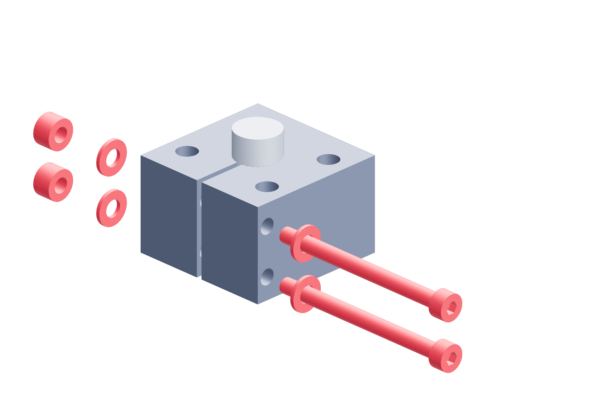

Preparation / metal31 / 179
Close the split hub clamps
Two bolts tighten the same split bore onto its plain shaft. Hand fit and controlled tightening precede the assigned torque proof of each hub in both directions.
Add14 M4 × 50 grade 12.9 clamp bolts · 28 flat washers · 14 locking nuts
Tools / setupMetal saw · 4.2 mm drill · independently clamped metal stock · 3 mm hex / 7 mm wrench

- Cut the 1.5 mm slit from the +Y edge 2 mm into the bore, so it opens fully. Keep it clear of the four plate holes.
- Drill both 4.2 mm passages through the hub at Y = 16 mm, Z = 6 and 19 mm from its registered side-face projection.
- Clean the bore and shaft, fit the assigned plain shaft and start both grade 12.9 bolts with washers and locking nuts.
- Confirm both bolt passages cross only the hub’s split side; keep the plain shaft/hub pairs labeled for controlled tightening.
Ready when
The slit and both clamp passages are clear, the plain shaft fits its bore and both bolts are ready for controlled tightening. A rocking bore, cracked hub, closed slit without grip or distorted shaft fit fails assembly. Correct the machined fit before applying proof load.